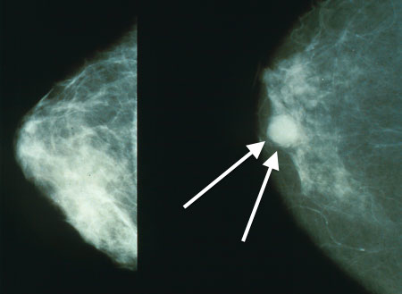

Ficha del catálogo
Carcinoma ductal infiltrante
- Sistema
- Mama
- Modalidad
- RX
- Región
- Mama
- Dificultad
- Avanzado
Es la neoplasia maligna más frecuente de la mama, originada en el epitelio ductal con ruptura de la membrana basal e invasión del estroma. Puede detectarse en tamizaje asintomático o presentarse como nódulo palpable duro, retracción cutánea o del pezón. El pronóstico depende del tamaño, el grado histológico, el estado ganglionar y el perfil de receptores.
Técnica
La mamografía digital en proyecciones craneocaudal y oblicua mediolateral es la base diagnóstica, complementada con compresión focalizada y magnificación. El ultrasonido caracteriza la lesión, evalúa la axila y guía la biopsia con aguja gruesa. La resonancia con contraste define la extensión tumoral y detecta multicentricidad u lesiones contralaterales.
Qué observar
- Nódulo espiculado o de márgenes indistintos
- Distorsión de la arquitectura y retracción del tejido circundante
- Microcalcificaciones pleomorfas asociadas al componente intraductal
- Engrosamiento o retracción de la piel y del pezón
- Sombra acústica posterior y orientación no paralela en ultrasonido
- Ganglios axilares con pérdida del hilio graso y cortical engrosada
Hallazgos
En mamografía aparece como una opacidad de alta densidad, espiculada o de contornos indistintos, a menudo con microcalcificaciones pleomorfas y distorsión arquitectural. En ultrasonido es un nódulo hipoecoico, de orientación no paralela, con márgenes angulados o espiculados, halo ecogénico y sombra acústica posterior. En resonancia muestra realce precoz e intenso con curva de lavado y márgenes irregulares.
Perlas
La mama densa reduce de manera notable la sensibilidad de la mamografía porque el tejido fibroglandular y el tumor comparten densidad; ante una lesión palpable con mamografía negativa hay que continuar el estudio con ultrasonido dirigido y, si persiste la sospecha clínica, con biopsia.
Diagnóstico diferencial
- Cicatriz radial
- Presenta un centro radiolúcido con espículas largas y aspecto cambiante entre proyecciones, aunque requiere confirmación histológica.
- Carcinoma lobulillar infiltrante
- Tiende a manifestarse como distorsión sutil o asimetría creciente sin masa definida, con mayor discrepancia entre tamaño clínico y radiológico.
- Necrosis grasa
- Existe antecedente traumático o quirúrgico y puede mostrar un quiste oleoso con calcificación en cáscara de huevo.
- Absceso o mastitis
- Hay signos inflamatorios agudos, colección con detritos y respuesta al tratamiento antibiótico.
Simuladores
- Superposición de tejido fibroglandular que simula una masa
- Cicatriz posquirúrgica con distorsión estable en el tiempo
- Necrosis grasa con aspecto espiculado
Por modalidad
- TC
- No se usa para el diagnóstico local, pero interviene en la estadificación a distancia.
- US
- Caracteriza la masa, valora la axila, mide la extensión y permite biopsia dirigida en tiempo real.
Protocolo
Mamografía digital bilateral con proyecciones craneocaudal y oblicua mediolateral, más compresión focalizada y magnificación de la zona sospechosa. Ultrasonido dirigido con transductor lineal de alta frecuencia incluyendo exploración axilar sistemática. La resonancia dinámica con contraste se reserva para valorar extensión y respuesta a tratamiento neoadyuvante.
Clasificación
El sistema BI-RADS gradúa la sospecha: La categoría 4 se subdivide en 4A, 4B y 4C con probabilidad creciente de malignidad, y la 5 indica hallazgo altamente sugestivo con más del noventa y cinco por ciento de probabilidad. La categoría 6 corresponde a malignidad ya confirmada por histología.
Errores frecuentes
- Descartar malignidad ante una mamografía negativa en mama densa
- No evaluar la axila en el mismo estudio ecográfico
- Confundir superposición de tejido con masa y viceversa

cáncer de mama carcinoma ductal espiculado BI-RADS mamografía mama densa axila